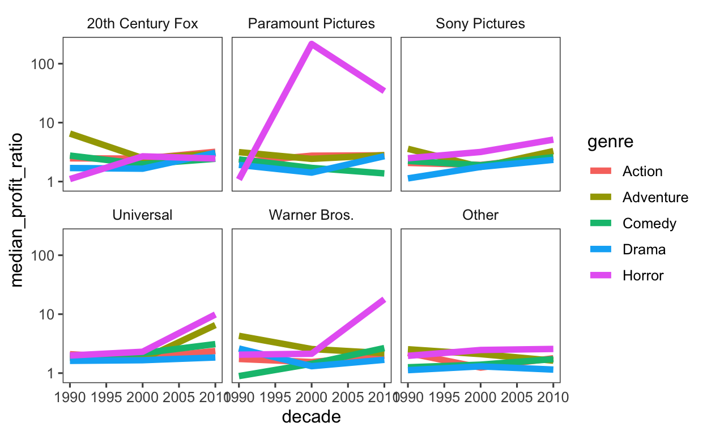
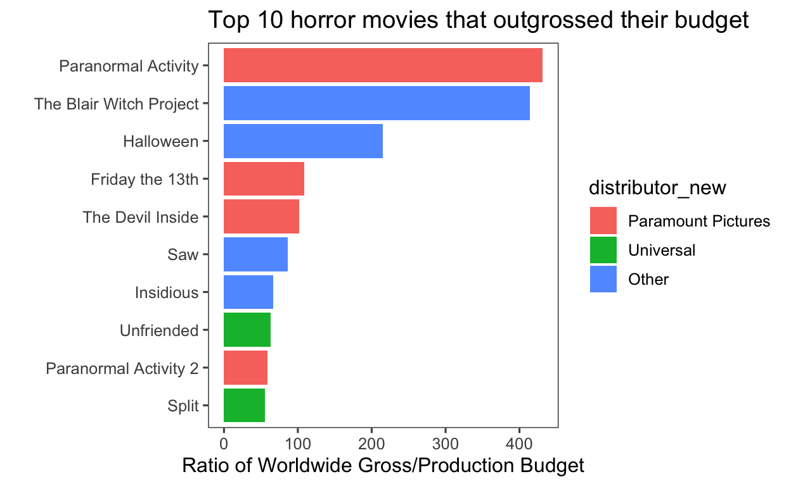
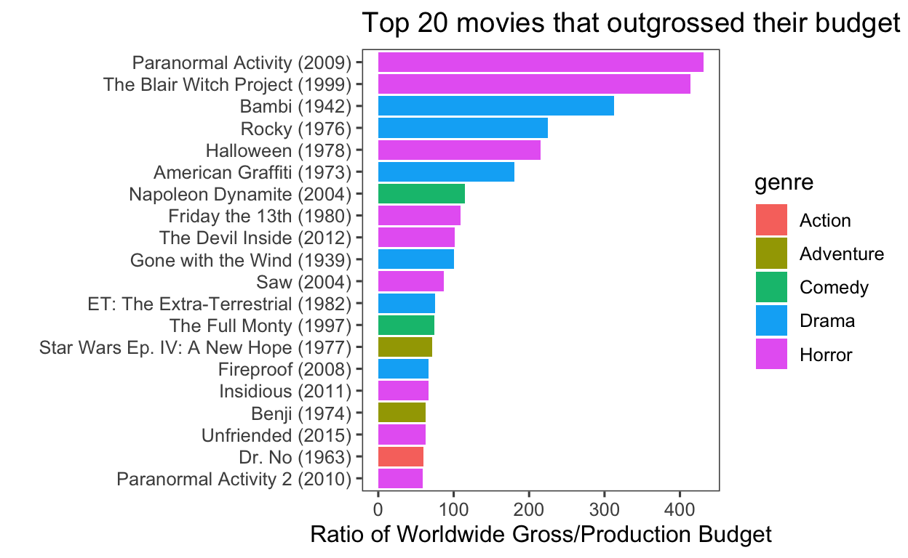

2018 Week 30 - Horro Movies
# horror_tt <- tt_load("2018-10-23")
# horror_raw <- horror_tt$movie_profit
# write_csv(horror_raw, "horror_raw.csv")
horror_raw <- read_csv("horror_raw.csv")
glimpse(horror_raw)
Rows: 3,401
Columns: 9
$ X1 <dbl> 1, 2, 3, 4, 5, 6, 7, 8, 9, 10, 11, 12, 13,…
$ release_date <chr> "6/22/2007", "7/28/1995", "5/12/2017", "12…
$ movie <chr> "Evan Almighty", "Waterworld", "King Arthu…
$ production_budget <dbl> 1.75e+08, 1.75e+08, 1.75e+08, 1.75e+08, 1.…
$ domestic_gross <dbl> 100289690, 88246220, 39175066, 38362475, 4…
$ worldwide_gross <dbl> 174131329, 264246220, 139950708, 151716815…
$ distributor <chr> "Universal", "Universal", "Warner Bros.", …
$ mpaa_rating <chr> "PG", "PG-13", "PG-13", "PG-13", "PG-13", …
$ genre <chr> "Comedy", "Action", "Adventure", "Action",…Save as a cleaned version:
data <- horror_raw %>%
select(-1) %>%
filter(worldwide_gross>0)
glimpse(data)
Rows: 3,365
Columns: 8
$ release_date <chr> "6/22/2007", "7/28/1995", "5/12/2017", "12…
$ movie <chr> "Evan Almighty", "Waterworld", "King Arthu…
$ production_budget <dbl> 1.75e+08, 1.75e+08, 1.75e+08, 1.75e+08, 1.…
$ domestic_gross <dbl> 100289690, 88246220, 39175066, 38362475, 4…
$ worldwide_gross <dbl> 174131329, 264246220, 139950708, 151716815…
$ distributor <chr> "Universal", "Universal", "Warner Bros.", …
$ mpaa_rating <chr> "PG", "PG-13", "PG-13", "PG-13", "PG-13", …
$ genre <chr> "Comedy", "Action", "Adventure", "Action",…$release_date
[1] 0
$movie
[1] 0
$production_budget
[1] 0
$domestic_gross
[1] 0
$worldwide_gross
[1] 0
$distributor
[1] 43
$mpaa_rating
[1] 132
$genre
[1] 0$production_budget
Min. 1st Qu. Median Mean 3rd Qu. Max.
250000 9600000 20000000 33512830 45000000 175000000
$domestic_gross
Min. 1st Qu. Median Mean 3rd Qu. Max.
0 6600000 25885000 45907732 60786269 474544677
$worldwide_gross
Min. 1st Qu. Median Mean 3rd Qu. Max.
4.230e+02 1.112e+07 4.117e+07 9.512e+07 1.195e+08 1.305e+09 release date is as chr, need to change to date.
data_trans <- data %>%
mutate(release_date = parse_date(release_date, "%m/%d/%Y")) %>%
arrange(desc(row_number())) %>%
distinct(movie, release_date, .keep_all = T) %>%
filter(release_date <= "2018-01-01") %>%
mutate(distributor_new = fct_lump(distributor, n = 5)) # top 6 distributors)
glimpse(data_trans)
Rows: 3,310
Columns: 9
$ release_date <date> 2005-07-22, 1998-08-28, 1997-03-28, 2000-…
$ movie <chr> "November", "I Married a Strange Person", …
$ production_budget <dbl> 250000, 250000, 250000, 250000, 250000, 25…
$ domestic_gross <dbl> 191862, 203134, 212285, 1055671, 3395391, …
$ worldwide_gross <dbl> 191862, 203134, 743216, 1157672, 3728400, …
$ distributor <chr> "Sony Pictures Classics", "Lionsgate", "Fo…
$ mpaa_rating <chr> "R", NA, "R", "R", "PG-13", "R", "R", "R",…
$ genre <chr> "Drama", "Comedy", "Comedy", "Drama", "Dra…
$ distributor_new <fct> Other, Other, Other, Other, Paramount Pict…# check that there are no duplicates
data_trans %>%
count(movie, release_date, sort = T)
# A tibble: 3,310 x 3
movie release_date n
<chr> <date> <int>
1 10 Days in a Madhouse 2015-11-11 1
2 10,000 B.C. 2008-03-07 1
3 102 Dalmatians 2000-11-22 1
4 12 Rounds 2009-03-27 1
5 12 Years a Slave 2013-10-18 1
6 127 Hours 2010-11-05 1
7 13 Going On 30 2004-04-23 1
8 16 Blocks 2006-03-03 1
9 17 Again 2009-04-17 1
10 2 Fast 2 Furious 2003-06-06 1
# … with 3,300 more rowstheme_set(theme_few())
data_trans %>%
ggplot(aes(production_budget)) +
geom_histogram() +
scale_x_log10()
# use log scale for dollars
data_trans %>%
ggplot(aes(fct_rev(distributor_new), production_budget)) +
geom_boxplot() +
scale_y_log10(labels = dollar) +
coord_flip()
data_trans %>%
ggplot(aes(fct_rev(distributor_new), worldwide_gross)) +
geom_boxplot() +
scale_y_log10(labels = dollar) +
coord_flip()
# which genre did the best?
data_trans %>%
count(genre, sort = T) # 5 genre
# A tibble: 5 x 2
genre n
<chr> <int>
1 Drama 1209
2 Comedy 798
3 Action 547
4 Adventure 467
5 Horror 289data_trans %>%
ggplot(aes(fct_reorder(genre, production_budget), production_budget)) +
geom_boxplot() +
scale_y_log10(labels = dollar) +
coord_flip()
glimpse(data_trans)
Rows: 3,310
Columns: 9
$ release_date <date> 2005-07-22, 1998-08-28, 1997-03-28, 2000-…
$ movie <chr> "November", "I Married a Strange Person", …
$ production_budget <dbl> 250000, 250000, 250000, 250000, 250000, 25…
$ domestic_gross <dbl> 191862, 203134, 212285, 1055671, 3395391, …
$ worldwide_gross <dbl> 191862, 203134, 743216, 1157672, 3728400, …
$ distributor <chr> "Sony Pictures Classics", "Lionsgate", "Fo…
$ mpaa_rating <chr> "R", NA, "R", "R", "PG-13", "R", "R", "R",…
$ genre <chr> "Drama", "Comedy", "Comedy", "Drama", "Dra…
$ distributor_new <fct> Other, Other, Other, Other, Paramount Pict…data_trans %>%
ggplot(aes(fct_reorder(genre, worldwide_gross), worldwide_gross)) +
geom_boxplot() +
scale_y_log10(labels = dollar) +
coord_flip()
data_trans %>%
filter(!is.na(distributor)) %>%
ggplot(aes(fct_reorder(genre, production_budget), production_budget)) +
geom_boxplot() +
scale_y_log10(labels = dollar) +
coord_flip() +
facet_wrap ( ~distributor_new)
data_trans %>%
filter(!is.na(distributor)) %>%
ggplot(aes(fct_reorder(genre, worldwide_gross), worldwide_gross)) +
geom_boxplot() +
scale_y_log10(labels = dollar) +
coord_flip() +
facet_wrap ( ~distributor_new)
# what are typical budgets over time
data_trans %>%
mutate(decade = 10*floor(year(release_date)/10)) %>%
group_by(decade) %>%
arrange(decade) %>%
view()
data_trans %>%
mutate(decade = 10*floor(year(release_date)/10)) %>%
group_by(decade) %>%
summarise(across(c(3,4,5), ~ median(.x, na.rm = TRUE))) %>%
pivot_longer(cols = c(-decade),
names_to = "metric",
values_to = "value"
) %>%
ggplot(aes(decade, value, col = metric)) +
geom_line(size = 2) +
scale_y_continuous(labels = dollar) # Gone with the Wind, 1930s
# top 20 movies
data_trans %>% arrange(desc(worldwide_gross)) %>%
select(release_date, movie, genre, worldwide_gross) %>%
head(20)
# A tibble: 20 x 4
release_date movie genre worldwide_gross
<date> <chr> <chr> <dbl>
1 2015-07-10 Minions Adventu… 1162781621
2 1993-06-11 Jurassic Park Action 1038812584
3 2017-06-30 Despicable Me 3 Adventu… 1034520868
4 1999-05-19 Star Wars Ep. I: The Phantom… Adventu… 1027044677
5 2016-03-04 Zootopia Adventu… 1019706594
6 1994-06-15 The Lion King Adventu… 986332275
7 2013-07-03 Despicable Me 2 Adventu… 975216835
8 2017-12-20 Jumanji: Welcome to the Jung… Adventu… 961758540
9 2004-05-19 Shrek 2 Adventu… 937008132
10 2003-05-30 Finding Nemo Adventu… 936429370
11 2005-11-18 Harry Potter and the Goblet … Adventu… 896911078
12 2016-07-08 The Secret Life of Pets Adventu… 886767422
13 2012-07-13 Ice Age: Continental Drift Adventu… 879765137
14 2013-11-22 The Hunger Games: Catching F… Adventu… 864868047
15 2009-07-01 Ice Age: Dawn of the Dinosau… Adventu… 859701857
16 2002-05-03 Spider-Man Adventu… 821706375
17 2017-06-02 Wonder Woman Action 821133378
18 1996-07-02 Independence Day Adventu… 817400878
19 2007-05-17 Shrek the Third Adventu… 807330936
20 2016-02-12 Deadpool Action 801029249# Difference between worldwise gross and production budget = profit
# Which genres have the biggest payoff?
data_trans %>%
mutate(profit_ratio = worldwide_gross/production_budget) %>%
arrange(desc(profit_ratio)) %>% # mostly horror movies topping the chart
head(10)
# A tibble: 10 x 10
release_date movie production_budg… domestic_gross worldwide_gross
<date> <chr> <dbl> <dbl> <dbl>
1 2009-09-25 Paran… 450000 107918810 194183034
2 1999-07-14 The B… 600000 140539099 248300000
3 1942-08-13 Bambi 858000 102797000 268000000
4 1976-11-21 Rocky 1000000 117235147 225000000
5 1978-10-17 Hallo… 325000 47000000 70000000
6 1973-08-11 Ameri… 777000 115000000 140000000
7 2004-06-11 Napol… 400000 44540956 46122713
8 1980-05-09 Frida… 550000 39754601 59754601
9 2012-01-06 The D… 1000000 53262945 101759490
10 1939-12-15 Gone … 3900000 198680470 390525192
# … with 5 more variables: distributor <chr>, mpaa_rating <chr>,
# genre <chr>, distributor_new <fct>, profit_ratio <dbl>data_trans %>%
mutate(profit_ratio = worldwide_gross/production_budget) %>%
arrange(desc(profit_ratio)) %>%
ggplot(aes(profit_ratio)) +
geom_histogram() +
scale_x_log10()
data_trans %>%
mutate(profit_ratio = worldwide_gross/production_budget) %>%
arrange(desc(profit_ratio)) %>%
group_by(genre) %>%
summarize(median_profit_ratio = median(profit_ratio)) %>%
arrange(desc(median_profit_ratio))
# A tibble: 5 x 2
genre median_profit_ratio
<chr> <dbl>
1 Horror 2.63
2 Adventure 2.49
3 Action 2.19
4 Comedy 1.87
5 Drama 1.52data_trans %>%
mutate(profit_ratio = worldwide_gross/production_budget) %>%
arrange(desc(profit_ratio)) %>%
group_by(genre) %>%
summarize(median_profit_ratio = median(profit_ratio)) %>%
arrange(desc(median_profit_ratio)) %>%
ggplot(aes(fct_reorder(genre, median_profit_ratio), median_profit_ratio)) +
geom_col() +
scale_y_log10() +
coord_flip()
data_trans %>%
mutate(profit_ratio = worldwide_gross/production_budget) %>%
arrange(desc(profit_ratio)) %>%
group_by(genre, year = year(release_date)) %>%
summarize(median_profit_ratio = median(profit_ratio),
movies = n()) %>%
ungroup() %>%
filter(year>2000) %>%
arrange(desc(median_profit_ratio)) %>%
ggplot(aes(year,
median_profit_ratio,
col = genre)) +
geom_line(size = 2) +
scale_y_log10()
# horror makes the most profit
Horror movies start being more profitable around 2013.
# look at genre, year, distributor, and look at the data by decade because sometimes per year there are less than 10 horror movies
data_trans %>%
mutate(profit_ratio = worldwide_gross/production_budget,
decade = 10*floor(year(release_date)/10)) %>%
group_by(genre, distributor_new, decade) %>%
summarize(median_profit_ratio = median(profit_ratio),
movies = n()) %>%
ungroup() %>%
filter( decade >= 1990,
!is.na(distributor_new)) %>%
arrange(desc(median_profit_ratio)) %>%
ggplot(aes(decade,
median_profit_ratio,
col = genre)) +
geom_line(size = 2) +
facet_wrap( ~distributor_new) +
scale_y_log10()

data_trans_2 <- data_trans %>%
mutate(profit_ratio = worldwide_gross/production_budget,
decade = 10*floor(year(release_date)/10))
glimpse(data_trans_2) # with profit ratio and decade
Rows: 3,310
Columns: 11
$ release_date <date> 2005-07-22, 1998-08-28, 1997-03-28, 2000-…
$ movie <chr> "November", "I Married a Strange Person", …
$ production_budget <dbl> 250000, 250000, 250000, 250000, 250000, 25…
$ domestic_gross <dbl> 191862, 203134, 212285, 1055671, 3395391, …
$ worldwide_gross <dbl> 191862, 203134, 743216, 1157672, 3728400, …
$ distributor <chr> "Sony Pictures Classics", "Lionsgate", "Fo…
$ mpaa_rating <chr> "R", NA, "R", "R", "PG-13", "R", "R", "R",…
$ genre <chr> "Drama", "Comedy", "Comedy", "Drama", "Dra…
$ distributor_new <fct> Other, Other, Other, Other, Paramount Pict…
$ profit_ratio <dbl> 0.76744800, 0.81253600, 2.97286400, 4.6306…
$ decade <dbl> 2000, 1990, 1990, 2000, 2010, 2000, 2010, …data_trans_2 %>%
count(decade, genre) %>%
group_by(decade) %>%
mutate(percent = n/sum(n)) %>%
ggplot(aes(decade, percent, col = genre)) +
geom_line(size = 2) +
scale_y_continuous(labels = percent)
# what distributors make the genre?
data_trans_2 %>%
filter(!is.na(distributor_new)) %>%
count(distributor_new, genre) %>%
ggplot(aes(genre, n,
fill = genre)) +
geom_col() +
facet_wrap( ~ distributor_new, scales = "free_x") +
coord_flip()
# horror movies are the least common genre produced
What were some of the profitable horror movies?
glimpse(data_trans_2)
Rows: 3,310
Columns: 11
$ release_date <date> 2005-07-22, 1998-08-28, 1997-03-28, 2000-…
$ movie <chr> "November", "I Married a Strange Person", …
$ production_budget <dbl> 250000, 250000, 250000, 250000, 250000, 25…
$ domestic_gross <dbl> 191862, 203134, 212285, 1055671, 3395391, …
$ worldwide_gross <dbl> 191862, 203134, 743216, 1157672, 3728400, …
$ distributor <chr> "Sony Pictures Classics", "Lionsgate", "Fo…
$ mpaa_rating <chr> "R", NA, "R", "R", "PG-13", "R", "R", "R",…
$ genre <chr> "Drama", "Comedy", "Comedy", "Drama", "Dra…
$ distributor_new <fct> Other, Other, Other, Other, Paramount Pict…
$ profit_ratio <dbl> 0.76744800, 0.81253600, 2.97286400, 4.6306…
$ decade <dbl> 2000, 1990, 1990, 2000, 2010, 2000, 2010, …data_trans_2 %>%
filter(genre == "Horror") %>%
arrange(desc(profit_ratio)) %>%
select(release_date, movie, worldwide_gross, distributor) %>%
head(10)
# A tibble: 10 x 4
release_date movie worldwide_gross distributor
<date> <chr> <dbl> <chr>
1 2009-09-25 Paranormal Activity 194183034 Paramount Pictures
2 1999-07-14 The Blair Witch Pr… 248300000 Artisan
3 1978-10-17 Halloween 70000000 Compass Internati…
4 1980-05-09 Friday the 13th 59754601 Paramount Pictures
5 2012-01-06 The Devil Inside 101759490 Paramount Pictures
6 2004-10-29 Saw 103880027 Lionsgate
7 2011-04-01 Insidious 99870886 FilmDistrict
8 2015-04-17 Unfriended 62869004 Universal
9 2010-10-20 Paranormal Activit… 177512032 Paramount Pictures
10 2017-01-20 Split 278306227 Universal data_horror <- data_trans_2 %>%
filter(genre == "Horror") %>%
arrange(desc(profit_ratio))
data_horror %>%
head(10) %>%
ggplot(aes(fct_reorder(movie, profit_ratio),
profit_ratio,
fill = distributor_new)) +
geom_col(aes(fill = distributor_new)) +
labs(x = "",
y = "Ratio of Worldwide Gross/Production Budget",
title = "Top 10 horror movies that outgrossed their budget") +
coord_flip()

Top 20 movies that outgrossed their budget
data_trans_2 %>%
arrange(desc(profit_ratio)) %>%
head(20) %>%
mutate(movie_year = paste0(movie, " (", year(release_date), ")")) %>%
ggplot(aes(fct_reorder(movie_year, profit_ratio),
profit_ratio,
fill = genre)) +
geom_col(aes(fill = genre)) +
labs(x = "",
y = "Ratio of Worldwide Gross/Production Budget",
title = "Top 20 movies that outgrossed their budget") +
# facet_wrap( ~ distributor_new, scales = "free") +
coord_flip()

https://www.youtube.com/watch?v=3-DRwg9yeNA&list=PL19ev-r1GBwkuyiwnxoHTRC8TTqP8OEi8&index=80